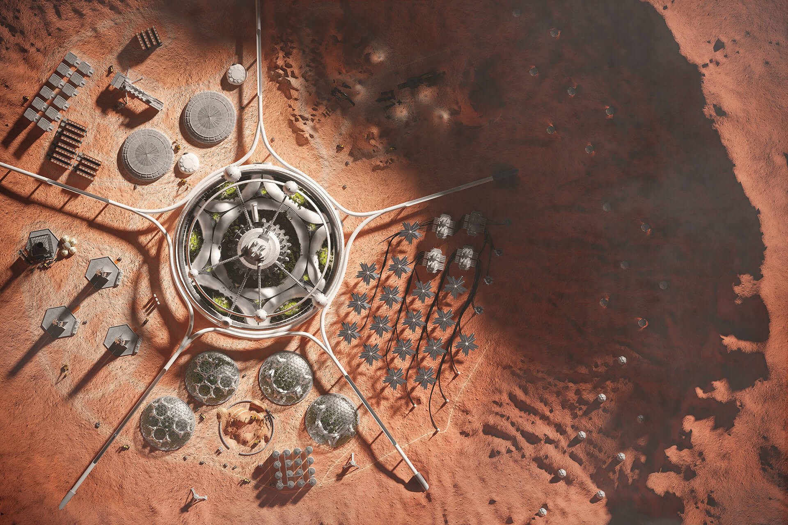
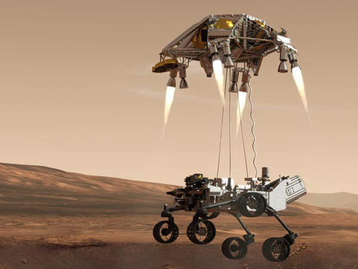
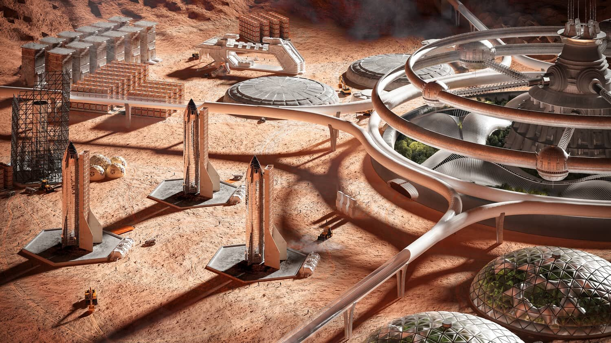
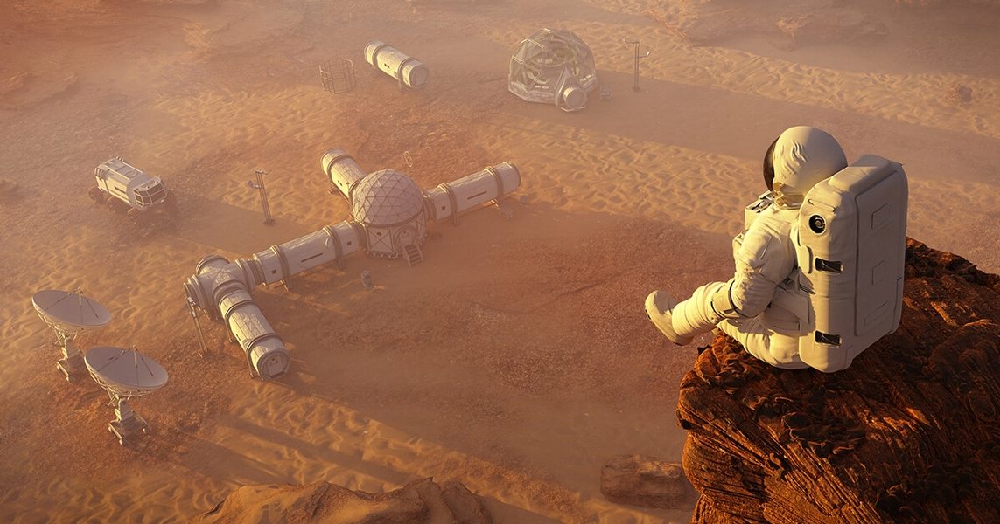
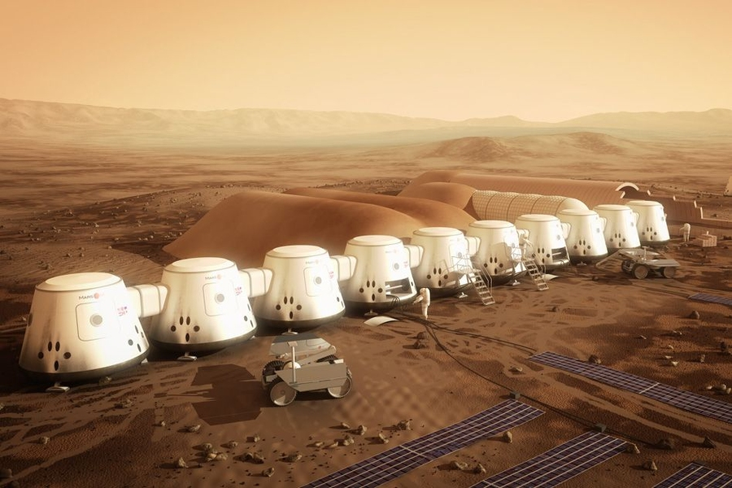

Invernadero
Todo lo necesario para abastecer de alimento a la nueva población multiplanetaria.

Perseverance
Llegada al planeta rojo del Rober Perseverance , utilizando un transportador con retropropulsores.

Space launch
Terminal de cohetes, un punto de entrada y salida del y hacia el resto del universo.

Balcon Palace
Hermosa vista desde uno de los riscos marcianos más imponentes del planeta, hacia el palacio central.

Palace
Palacio central, gubernamental y sitio de paso de recarga de oxígeno y telecomunicaciones.

Barrio unido
Bloque de 10 hábitats para las personas que transitan ese sector del planeta.